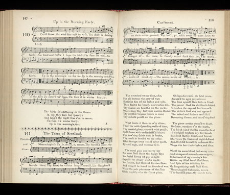

Tears of Scotland
Lyrics by Tobias Smollet (1721-1771)
From the MS at Towneley Hall, page 27
Tuneby James Oswald (1711/69)
Scots Musical Museum Volume II p.147/148 N° 141
Sequenced By Christian Souchon



|
1. Mourn, hapless Caledonia, mourn
Thy banish'd peace, thy laurels torn! Thy sons, for valour long renown'd, Lie slaughter'd on their native ground; Thy hospitable roofs no more Invite the stranger to the door:- In smoky ruins sunk they lie, The monuments of cruelty. (bis) 2. The wretched owner sees afar His all become the prey of war, - Bethinks him of his babes and wife, Then smites his breast and curses life. Thy swains are famish'd on the rocks Where once they fed their wanton flocks: Thy ravish'd virgins shriek in vain; Thy infants perish on the plain. (bis) 3. What boots it then, in every clime, Through the wide-spreading waste of time, Thy martial glory, crown'd with praise, Still shone with undiminish'd blaze? Thy towering spirit now is broke, Thy neck is bended to the yoke :- What foreign arms could never quell By civil rage and rancour fell. (bis) 4. The rural pipe and merry lay No more shall cheer the happy day; No social scenes of gay delight Beguile the dreary winter night; No strains but those of sorrow flow, And nought be heard but sounds of woe,- While the pale phantoms of the slain Glide nightly o'er the silent plain.(bis) 5. O baneful cause, O fatal morn, Accursed to ages yet unborn! The sons against their father stood, The parent shed his children's blood. Yet, when the rage of battle ceased, The victor's soul was not appeased;- The naked and forlorn must feel Devouring flames and murdering steel! (bis) 6. The pious mother, doomed to death, Forsaken wanders o'er the heath; The bleak wind whistles round her head; Her helpless orphans cry for bread. Bereft of shelter, food and friend, She views the shade of light descend; And, stretched beneath the inclement skies Weeps o'er her tender babes - and dies.(bis) 7. While the warm blood bedews my veins And unimpaired remembrance reigns, Resentment of my country's fate Within my filial breast shall beat. And, spite of her insulting foe, My sympathising verse shall flow. Mourn, hapless Caledonia, mourn Thy banish'd peace, thy laurels torn! (bis) Verse 7: The Towneley MS has: l.1 : Whilst vital blood flows in my veins l.3 : Resentment for my country's fate l.8 : Thy banished Prince and laurels torn! |
1. Calédonie infortunée
Toi dont les lauriers sont flétris! Les corps de tes valeureux fils Jonchent ta terre ensanglantée; Tes toits jadis hospitaliers Offraient leurs abris accueillants- Désormais, vestiges fumants, Ils servent de hideux trophées. (bis) 2. Ceux qui possédaient voient, au loin, Tous leurs biens détruits par la guerre, - Pensant aux enfants et leurs mères, Ils sont accablés de chagrin. Ces rochers où l'on meurt de faim Etaient d'abondants pâturages: Les cris des enfants en bas âge, Des filles violées sont bien vains. (bis) 3. A quoi bon avoir en tout lieu Acquis, au fil de tant d'années, Une gloire, une renommée Qui brille encor de tous ses feux? Ton courage altier est brisé, On le voit ployer sous le joug:- L'étranger n'en venait à bout. Rage et rancœur l'ont terrassé. (bis) 4. La muse agreste en ses doux chants Ne fait plus entendre sa voix. Finis les rires d'autrefois, Les charmantes veillées d'antan; Il n'est de chants que chants de peine, Alternés de pleurs éperdus,- Et les mânes des disparus Hantent, la nuit, nos mornes plaines. (bis) 5. Cause funeste et jour fatal, Maudits à jamais, d'âge en âge! Où s'affrontaient mêmes lignages, Le fils du père était rival. Lorsque de lutter nous cessâmes, Il en fallait plus au vainqueur: Le vaincu connaîtrait l'horreur Du feu destructeur, de sa lame! (bis) 6. La mère, en cet instant ultime, Erre éperdue parmi la lande; La bise siffle sur la brande; Ses pauvres enfants crient famine. Privée d'amis, de pain, d'abri, Elle voit le jour qui décline Et, gisant sous un ciel de bruine, Meurt, en pleurant ses chers petits. (bis) 7. Tant que le sang coule en mes veines, Que ma mémoire est mon amie, L'outrage fait à ma patrie Emplit mon coeur filial de haine. Face à l'adversaire acharné, Mon chant clame ma sympathie, Infortunée Calédonie, Toi, dont sont flétris les lauriers! (bis) Trad. Ch. Souchon (c) 2006 Strophe 7: Dans le manuscrit Towneley on lit: l.7/8 : O Calédonie dépouillée De ton Prince et de tes lauriers!. |
|
This song was written by the Scottish-born
Whig novelist, Tobias Smollett
(1721-71). Burns, in his notes on the 'Museum', recorded that 'Dr Blacklock told me that Smollet[t], who was
at bottom
a great Jacobite, composed these beautiful and pathetic verses on the infamous depredations of the Duke of Cumberland after the Battle of Culloden'.
The Dr Blacklock referred to in Burns's note is Thomas Blacklock (1721-91), minor poet and friend of Burns. As to the tune, it was composed by the Scottish composer and music publisher, James Oswald (1711-69). |
Tobias Smollett (1721 - 1771) |
Ce chant fut composé par un Ecossais d'origine,
le romancier Whig Tobias Smollett
(1721-71). Burns, dans ses notes sur le "Musée", rapporte que "le Dr Blacklock m'a dit que Smolett, qui était,
au fond
, un grand Jacobite, a composé ce beau et pathétique poème sur les exactions déshonorantes commises par le Duc de Cumberland après la bataille de Culloden".
Le Dr Blacklock en question est Thomas Blacklock (1721-91), poète mineur et ami de Burns. Quant à la mélodie, on la doit au compositeur et éditeur de musique écossais, James Oswald (1711-69). |